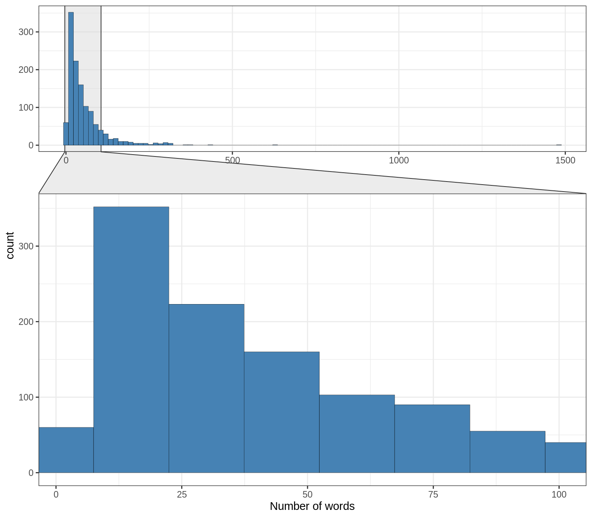

Distribution of word counts in response fields
We will focus on word count of response field because the data we are interested in lies there.
There’s a lot of variation in response word count. The response word count has a distribution with a tail is on the left side meaning that most of the values are accumulated on the left. So this distribution has a negative skew.

Figure 11: Distribution of word count of responses. A zoom to response word counts between 0 and 100.
If we look at the distribution of word count of responses by specific sectors which have relatively higher sample size:

Figure 12: Distribution of word count of responses in “VBG”, “Poblacion” and “Tecnico” sectors
TODO